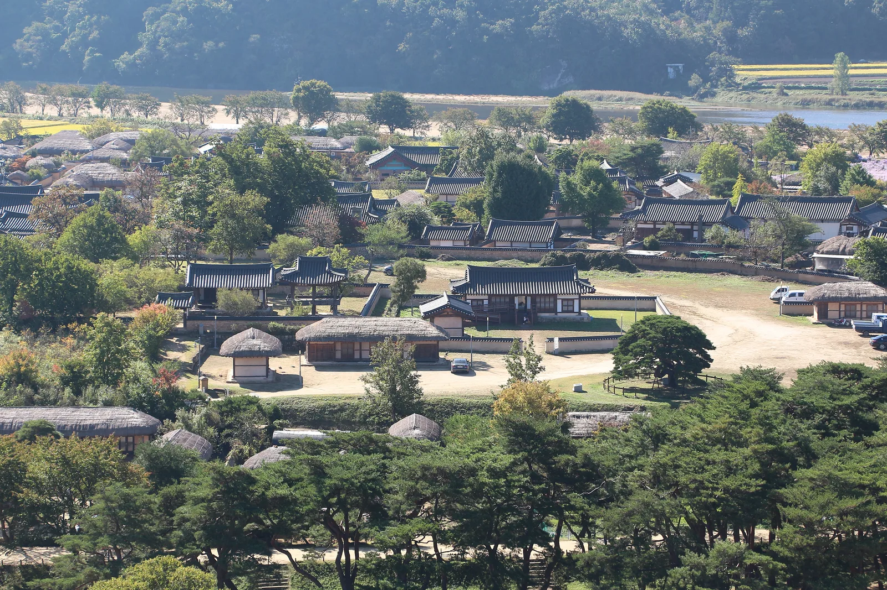
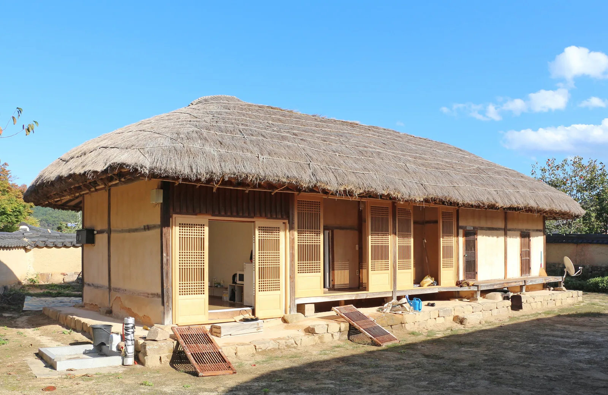
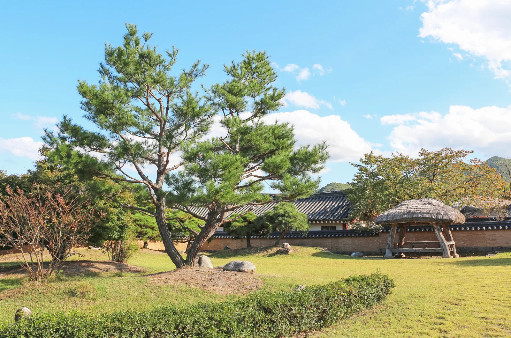
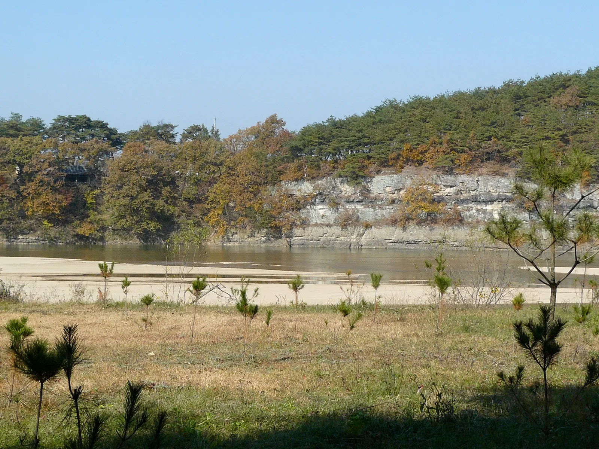
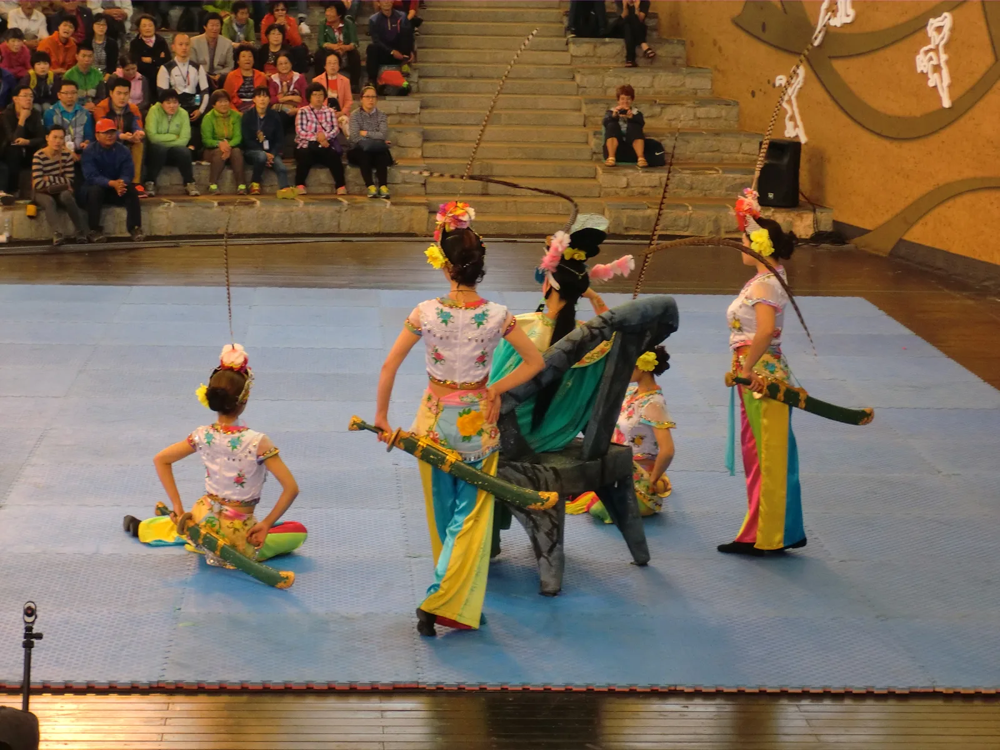

▲ 부용대에서 내려다본 하회마을. 마을 안 흙길에 보이는 차량은 대부분 주민 차량으로, 관광객 차량은 마을에 들어올 수 없다 ⓒ Wikimedia Commons
안동 하회마을에 자차로 가면 반드시 마주치는 상황이 있다. 주차장에 차를 세워도 마을이 보이지 않는다는 것이다. 잘못 온 게 아니다. 하회마을은 관광객 차량이 마을 안으로 들어갈 수 없는 구조다. 2008년경 마을 안에 있던 상업시설을 외곽으로 옮기면서 매표소와 주차장, 관리사무소가 모두 마을 밖으로 이전됐고, 그때부터 셔틀버스 운행이 시작됐다.
1. 왜 차가 못 들어가나

▲ 하회마을 초가집. 전시용 민속촌이 아니라 주민이 실제로 거주하는 마을이다 ⓒ Wikimedia Commons
하회마을은 재현해 만든 민속촌이 아니라 사람이 실제로 사는 마을이다. 유네스코 세계유산으로 등재된 전통 마을이기도 하다. 마을 안 골목은 애초에 자동차 통행을 전제로 만들어진 길이 아니고, 관광객 차량이 밀려들면 주거 환경과 유산 보존 모두에 부담이 된다. 그래서 매표소·주차장·상업시설을 마을 바깥에 두고, 방문객은 걸어가거나 셔틀을 타고 들어가도록 동선이 설계돼 있다.
2. 셔틀버스 — 10분 간격, 무료
| 구분 | 내용 |
|---|---|
| 운행 구간 | 하회마을 매표소 ↔ 탈놀이전수관 |
| 배차 간격 | 10분 |
| 첫차 | 09:00 (양방향) |
| 막차 | 기점행 19:20 / 종점행 19:30 |
| 요금 | 무료 (입장권 구입 필수) |
셔틀버스는 처음에는 왕복 요금을 받았지만, 걸어 들어가는 방문객과의 형평성 문제가 제기되면서 반액을 거쳐 지금은 무료로 운영된다. 운영 주체도 2022년 3월 안동버스로 넘어갔다. 평상시 투입 차량은 2대이고 성수기에는 증차한다. 안동 시내버스 노선 가운데 가장 짧은 축에 드는 구간이라, 셔틀을 타지 않고 숲길을 걸어 들어가는 선택지도 있다. 봄가을 날씨 좋은 날에는 이 길 자체가 볼거리로 꼽힌다.
즉 입장권 5,000원을 내면 주차장과 셔틀, 하회세계탈박물관까지 함께 해결되는 구조다. 감면 폭도 넓은 편이어서 만 65세 이상 내국인(2026년 기준 1961년생 생일 이후)과 6세 이하 어린이, 국가유공자·장애인은 무료이고, 안동시민과 예천군민은 어른 1,000원이다.
막차보다 먼저 걸리는 것은 입장 마감 셔틀 막차는 19시 20~30분대지만, 매표소 입장 마감은 하절기(4~9월) 17:30, 동절기(10~3월) 16:30이다. 10월부터 마감이 1시간 앞당겨지므로, 가을 단풍철에 오후 늦게 출발하면 주차장까지 가고도 못 들어가는 상황이 생긴다. 셔틀 시간표가 아니라 입장 마감 시각을 기준으로 출발 시각을 역산해야 한다.
3. 주차는 매표소·장터 앞 한 덩어리, 목적지는 '하회마을 주차장'

▲ 하회마을 안 풍경. 차를 밖에 두고 걸어 들어가야 하는 만큼 신발과 동선을 미리 정해두는 편이 좋다 ⓒ Wikimedia Commons
내비게이션 목적지는 '안동 하회마을 주차장' 또는 매표소 주소(안동시 풍천면 전서로 186-10)로 잡으면 된다. 고속도로에서는 중앙고속도로 서안동IC가 가장 가깝다. 주차장은 마을이 아니라 매표소·하회장터 앞에 있고, 승용차와 대형버스 구역이 나뉘어 있을 뿐 여러 곳에 흩어진 별개 시설이 아니다. 이곳에 세운 뒤 바로 옆 매표소에서 표를 끊고 셔틀을 타거나 걸어 들어가는 것이 표준 동선이다. 주차료는 무료다.
마을 안쪽에도 주차 공간이 있지만 설날·추석 같은 특정일에만 개방되는 자리라, 평상시 방문 계획에 넣어서는 안 된다. "마을 앞까지 들어갈 수 있다"는 후기는 대개 이 예외적인 날의 이야기다.
부용대는 걸어서 갈 수 없다 마을 전경 사진의 명당인 부용대는 낙동강 건너편 절벽이다. 나룻배는 상시 운항이 아니어서, 자차라면 하회마을 주차장에서 차를 빼 강을 돌아 '화천서원'을 목적지로 다시 잡아야 한다. 화천서원·옥연정사 앞에 별도 주차 공간이 있고, 거기서 뒷길로 약 15분 오르면 부용대 정상이다. 하회마을 입장권과 별개 동선이므로 왕복 시간을 따로 잡아두는 편이 좋다.

▲ 부용대 절벽. 마을과 강을 사이에 두고 마주 보고 있어, 자차로는 화천서원 쪽으로 돌아 들어가야 한다 ⓒ david&alina at Flickr, Wikimedia Commons (CC BY-SA 2.0)
마을 안에서는 하회별신굿탈놀이 상설공연이 3~12월 화·수·목·금·토·일 오후 2시부터 1시간 동안 하회마을상설공연장에서 무료로 열린다. 공연을 보려면 최소 오후 1시 전에는 주차장에 도착해 있어야 여유가 있다.
▲ 하회별신굿탈놀이 공연 장면. 마을 안 상설공연장에서 관람료 없이 볼 수 있다 ⓒ Bencowburn, Wikimedia Commons (CC BY-SA 4.0)
4. 국제탈춤페스티벌과 겹친다면

▲ 하회마을 한옥. 탈춤페스티벌 기간에는 하회마을에도 전통마당이 별도로 마련된다 ⓒ 한국관광공사
2026 안동국제탈춤페스티벌은 9월 24일(목)부터 10월 4일(일)까지 11일간 열린다. 주제는 '가면의 기억, 모두의 춤'이고, 24개국 28개 팀이 참여한다. 자차로 가는 사람이 가장 많이 착각하는 지점이 행사장 위치다. 메인 무대는 탈춤공원이 아니라 원도심의 '중앙선 1942 안동역'(구 안동역 광장)이고, 축제는 안동역·원도심(웅부공원·문화공원)·탈춤공원·하회마을 네 권역에 걸쳐 열린다. 개막식은 축제 초반 저녁 6시 안동역 메인무대에서 진행되는데, 공식 홈페이지는 9월 24일, 일부 보도는 9월 25일로 안내하고 있어 출발 전 확인이 필요하다. 폐막식은 10월 4일 20시 30분부터다.
올해는 유료 축제라는 점도 미리 알고 가야 한다. 탈춤공연장 입장권은 사전예매 일반 6,000원·학생 4,000원, 현장 구매는 각각 8,000원·6,000원이다. 만 6세 이하와 기초생활수급자, 장애인, 국가유공자는 무료다.

▲ 안동국제탈춤페스티벌 공연 무대. 관객이 계단식 객석까지 채우는 규모라, 주차는 행사장 바로 앞을 노리지 않는 편이 낫다 ⓒ hyolee2, Wikimedia Commons (CC BY-SA 3.0)
주차는 축제 공식 홈페이지 '주차장 안내'가 기준이다. 행사장 주변을 7개 지구로 나눠 총 1,246면을 안내하는데, 규모가 크게 쏠려 있다. 가장 큰 곳은 중앙로 일대(576면)이고 정작 탈춤공원 일대는 96면에 그친다. 탈춤공원 앞에 대겠다는 계획은 사실상 실패를 전제로 잡는 셈이다. 그 밖에 둑방·안동체육관(50면) 등 외곽 지구가 배정돼 있고, 일부 주차장에서는 행사장까지 셔틀버스와 전동카트가 운행된다. 주차 요금은 무료다.
탈춤공원·안동역과 하회마을은 서로 다른 장소다. 하회마을은 안동 시내에서 서쪽으로 떨어져 있어, 두 곳을 하루에 묶는다면 이동 시간과 각각의 주차 동선을 따로 계산해야 한다. 시내에서 하회마을로 가는 시내버스는 210번·급행2번·풍천2번이다.
탈춤페스티벌 공식 주차장 안내에서 지구별 위치 확인5. 정리
체크포인트
- 관광객 차량은 마을 안으로 들어갈 수 없다. 주차장에 세운 뒤 셔틀 또는 도보로 이동한다.
- 입장권 어른 5,000원 하나로 주차장·셔틀·하회세계탈박물관이 모두 포함된다.
- 셔틀은 10분 간격·무료, 첫차 09:00, 막차는 19시 20~30분대다. 다만 실제 마지노선은 입장 마감 시각(4~9월 17:30, 10~3월 16:30)이다.
- 주차장은 매표소·장터 앞 한 곳이다. 마을 안 주차 공간은 설·추석 등 특정일에만 열린다.
- 부용대는 강 건너편이라 차를 빼서 '화천서원'으로 다시 가야 한다. 걸어서 넘어갈 수 없다.
- 탈춤페스티벌(9/24~10/4)의 메인 무대는 탈춤공원이 아니라 중앙선 1942 안동역이고, 공식 주차 안내는 7개 지구 총 1,246면이다. 탈춤공원 일대는 96면뿐이다.
- 탈춤페스티벌 공연장은 유료(사전예매 일반 6,000원, 현장 8,000원)다.
문의는 하회마을 관리사무소 054-854-3669, 매표소 054-840-3801이다.